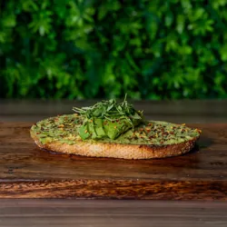
Toasted sourdough topped with creamy avocado spread, olive oil, cracked black pepper, chili flakes, and fresh micro cilantro
The Menu
Cafecitos, pan dulce, fresh jugos, and a little something for every mood.
Menu and prices from Café X. Final availability and pricing are confirmed when ordering.
Try another flavor or browse the full menu.
Savory bites inspired by the rich and comforting flavors of Mexico, made fresh to enjoy any time of day

Toasted sourdough topped with creamy avocado spread, olive oil, cracked black pepper, chili flakes, and fresh micro cilantro
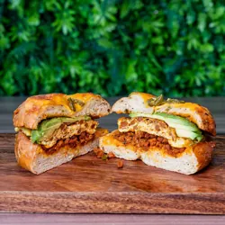
A toasted jalapeño bagel stacked with spicy mayo, savory chorizo, egg, and fresh avocado
Classic breakfast bagel with crispy bacon, egg, melted American cheese, and a touch of spicy mayo
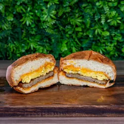
Toasted bagel layered with turkey sausage, egg, American cheese, and spicy mayo for a satisfying breakfast bite
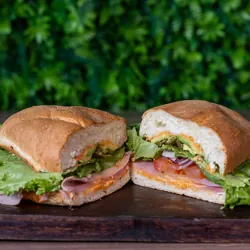
A classic Mexican torta on soft telera bread layered with ham, queso fresco, pepper jack cheese, avocado, tomato, onion, jalapeños, lettuce, and creamy mayo
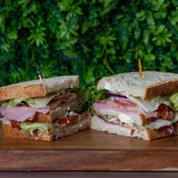
A hearty stacked sandwich on toasted sourdough with ham, turkey, crispy bacon, fresh lettuce, tomato, onion, and melted American and pepper jack cheeses
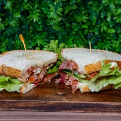
Crispy bacon layered with fresh lettuce and tomato on toasted sourdough with a light spread of mayo
Golden toasted telera bread (sandwich roll) filled with a melty blend of pepper jack, American, and Oaxaca cheese
A selection of traditional Mexican pastries, baked to bring warmth and sweetness to every visit
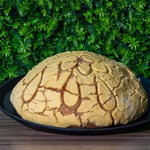
Our oversized signature concha , perfect for sharing or indulging
The ultimate Mexican dessert; rich chocolate cake topped with creamy caramel flan and a sweet cajeta (Mexican caramel) drizzle
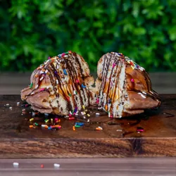
A sweet Mexican concha filled with your choice of ice cream, topped with drizzle and colorful sprinkles
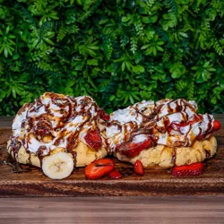
Two concha waffles topped with whipped cream, chocolate and cajeta (Mexican caramel) drizzle, and fresh sliced strawberries and bananas
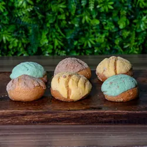
Bag filled with 6 mini conchas
Traditional Mexican bread
Golden, flaky layers wrapped around melted chocolate, simple, classic, indulgent
Buttery, flaky croissant filled with rich almond cream and topped with toasted almonds
Savory cheese, jalapeños and ham
Classic Mexican-style croissant, light, airy, and perfectly golden
A delightful Mexican sweet treat featuring chocolate, caramel, and nuts, creating a rich and satisfying dessert experience
Soft, buttery concha filled with rich mantequilla, sweet, fluffy, and comforting
Traditional gingerbread-style cookie with warm spices and a soft bite, nostalgic and dulce
Coffee sourced from Mexico and brewed with intention, honoring the richness of its origins; Enjoy it your way - hot, iced, or blended* - crafted to match every moment
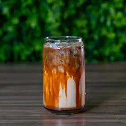
Espresso with creamy milk and rich dulce de leche sweetness
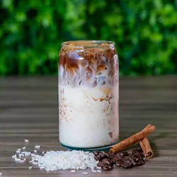
Smooth espresso blended with our signature house horchata
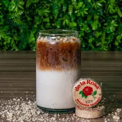
A sweet and nutty latte inspired by the beloved Mexican peanut candy
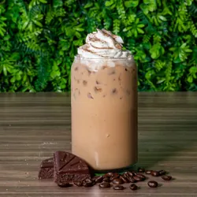
Espresso mixed with rich Abuelita chocolate for a bold mocha-style drink
Espresso sweetened naturally with 100% organic agave nectar and steamed milk
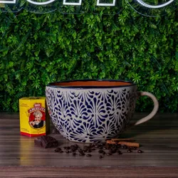
Our oversized CAFÉX specialty coffee or hot chocolate meant for sharing (or for serious coffee lovers)
Rich espresso diluted with hot water for a smooth, bold, and classic coffee flavor
Perfectly balanced espresso, steamed milk, and velvety foam for a light yet creamy coffee
Traditional Mexican spiced coffee brewed with cinnamon and piloncillo for a warm, aromatic sweetness
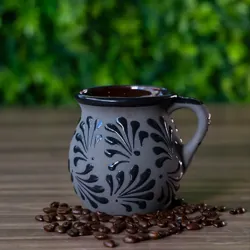
Freshly brewed classic coffee, smooth and comforting with deep roasted flavor
Espresso combined with silky steamed milk for a smooth, creamy everyday favorite
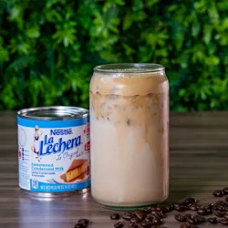
Espresso with steamed milk and sweet condensed milk for a rich, sweet, and velvety coffee
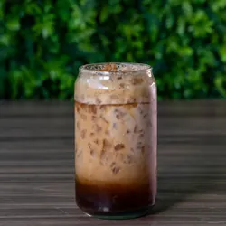
Espresso shaken with brown sugar and ice for a bold, lightly sweet, refreshing coffee
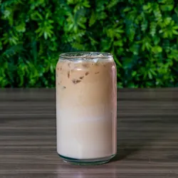
Espresso blended with creamy white chocolate and milk for a smooth, dessert-like coffee
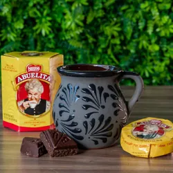
Mexican hot chocolate inspired by Abuelita, rich with cinnamon and chocolate spice
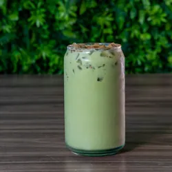
Matcha whisked with milk for a smooth, earthy, and energizing drink
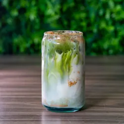
Matcha blended with creamy house horchata
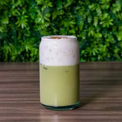
Matcha combined with sweet banana for a tropical, energizing twist
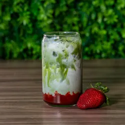
Matcha layered with strawberry for a bright, refreshing flavor combination
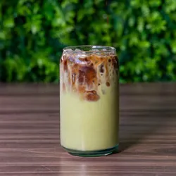
Matcha infused with espresso for a deep, bold flavor
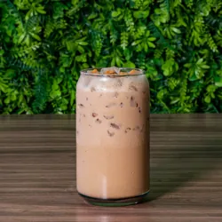
Spiced black tea with warm notes of cinnamon, cardamom, and clove
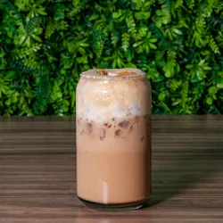
Classic chai with sweet banana for a smooth tropical spice blend
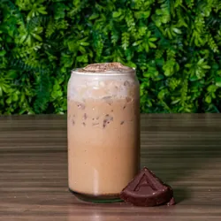
Chai tea combined with chocolate for a cozy dessert-style drink
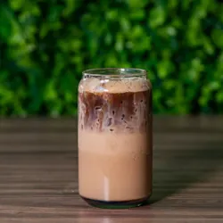
Chai with espresso for a bold spiced flavor
A calming herbal infusion perfect for a soothing and caffeine-free option
Freshly pressed juices made from vibrant fruits for a naturally refreshing experience
A refreshing green juice packed with nopal cactus, crisp apple, cucumber, lime, and ginger for a vibrant and energizing boost
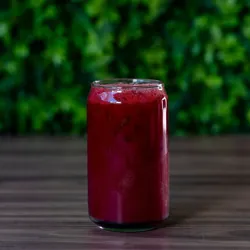
A bold and earthy blend of apple, beets, carrots, orange, and ginger packed with natural sweetness and nutrients
A tropical refresher made with pineapple, coconut, and celery for a light and hydrating juice
Bright and naturally sweet juice made with carrot, orange, mango, and coconut for a smooth tropical flavor
A fruity blend of strawberry, apple, and orange for a refreshing and naturally sweet juice
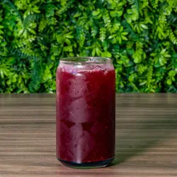
A vibrant hibiscus juice blended with strawberry and mango for a floral, slightly tart tropical refreshment
Create your own fresh juice by choosing up to three fruits or vegetables from our selection of bases and secondary ingredients
Refreshing traditional fruit drinks made with real ingredients, inspired by the vibrant flavors of Mexico
Refreshing cantaloupe agua fresca, naturally sweet and ultra-hydrating
Bold hibiscus infusion with a tangy, floral kick, light, vibrant, and refreshing
Fresh pineapple agua fresca, bright, tropical, and perfectly sweet
Cool cucumber agua fresca with a crisp, clean finish, refreshment at its finest
House-made horchata with rice, cinnamon, and vanilla, smooth, creamy, y clásica
From creamy shakes to classic Mexican sodas and energizing drinks, something for every mood
A nostalgic Mexican chocolate milkshake made with Pancho Pantera chocolate and creamy milk
A rich and creamy shake blended with Pancho Pantera chocolate, fresh bananas, and milk
A rich and creamy shake blended with Pancho Pantera chocolate, fresh strawberries and bananas, milk
Sweet mango blended to perfection, layered with chamoy, Tajín, and limón, sweet, spicy, and addictive
Refreshing energy drinks crafted to keep you moving and energized throughout the day
A bold tropical energy blend with mango purée, passionfruit, and pomegranate for a sweet and tangy kick
Electric blue raspberry mixed with fresh lime for a bright and refreshing citrus energy boost

A powerful berry fusion of strawberry, raspberry, blue raspberry, and lime for a vibrant and fruity energy drink
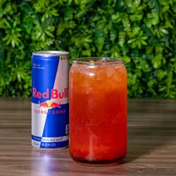
A tropical blend of coconut, peach, and strawberry for a smooth and refreshing island-style energy drink
A sugar-free version of our tropical favorite with coconut, peach, and strawberry flavors
A refreshing mix of passion fruit, watermelon, and lime for a light and energizing citrus burst
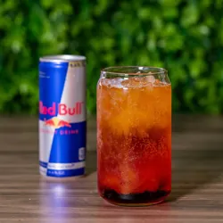
A bold citrus explosion made with orange, pomegranate, and mango purée
A sugar-free strawberry and peach energy drink with a smooth fruity finish
Classic favorites including Micheladas, bottled beers, wine, and more
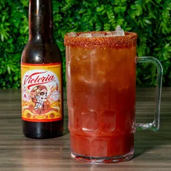
A classic Mexican beer cocktail with lime, spices, and savory Michelada mix
A selection of popular Mexican beers served cold
A bucket of chilled beers perfect for sharing with friends
A refreshing selection of classic Mexican sodas made with real cane sugar
The classic energy drink served chilled
All the energy with zero sugar